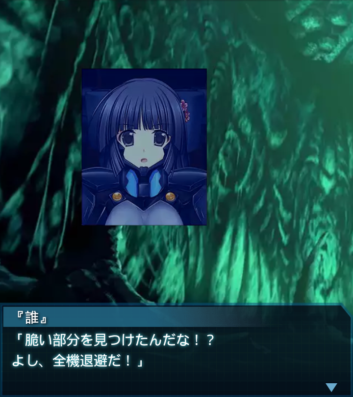

中国・H-01Aあ号標的ブロック
『誰』
「ここが…あ号標的ブロック…。
凄乃皇の自爆の影響か、もう
ボロボロといった感じだな」
神宮司少佐
「天井に大きな穴が…。そうか、
あそこから脱出艇が…」
龍浪響
「少佐、Ａ-０１部隊の戦いを…
桜花作戦の成功を無にする訳には
いきませんよ、絶対に！」
神宮司少佐
「当然だ。全機、床面の構造分析を
急げ！ＢＥＴＡ共はまたすぐに
湧いて出てくるぞ！」
龍浪響
「少佐、残念ながら既に湧いて
ますよ。現在ツェルベルス大隊の
一部が交戦中です！」
『誰』
「よし、俺達が援護に向かう」
龍浪響
「いえ、ここは自分達が！いつも
『誰』大尉達に任せていて
は、大尉達が保ちませんよ！」
『誰』
「余計な気遣いは無用だ。それに
そう思うなら一刻も早く下への道を
見つけてくれ」

龍浪響
「り、了解！
それじゃお任せします！
よろしくお願いします！」
『誰』
「ああ、任された。
全機行くぞッ！」
千堂柚香
「『誰』大尉！そのまま一端
部屋の外に出てください！床面を
Ｓ－１１で爆破します！」

『誰』
「脆い部分を見つけたんだな！？
よし、全機退避だ！」
ズンッ！！！！！

『誰』
「……どうだ？」
千堂柚香
「計算上は、あと２発ほどＳ－１１
を使えば、『下』の天井に穴が
開きます」
神宮司少佐
「『誰』大尉、『下』への道
が開いたら、ツェルベルス大隊と
共に降りてくれ」
神宮司少佐
「状況が判明し次第こちらも動く。
作戦は、あ号標的をＳ－１１で爆破
するというものだが――」
神宮司少佐
「相当数の犠牲と想定以上の
Ｓ－１１を消費したツェルベルス
大隊はその任務を果たせない」
『誰』
「そうか…犠牲が大きければ、
それだけ手持ちのＳ－１１は少なく
なる。その上使い過ぎれば…」
神宮司少佐
「我々の部隊がそれを担当する。
その為の下地作りを頼みたい。
…できるな？」
『誰』
「勿論ですよ！
必ずあ号標的を破壊して
やりましょう！」
千堂柚香
「Ｓ－１１設置完了！
全機退避してください」

ズンッ！！！！！
『誰』
「あと１発…。
アイヒベルガー少佐の号令があり
次第、突入するぞ！」